Last updated on May 5, 2025 pm
本文为SJTU-AI2615算法课程的期中复习，主要复习内容为分治法、图、贪心算法。
分治法
算法设计思路
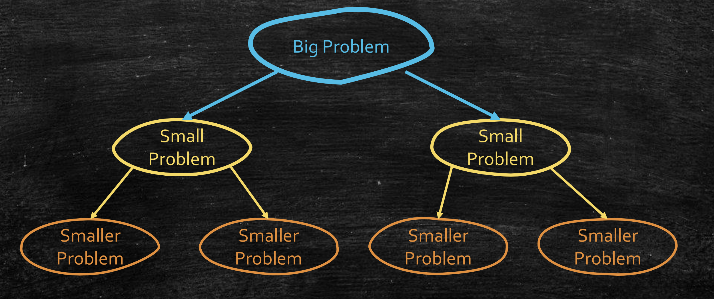
- 分治法框架:
- 分解（Divide）：将原问题分解为几个规模更小的子问题
- 递归（Recurse）：递归解决子问题（递归基直接求解）
- 合并（Combine）：将子问题的解整合为原问题解
- 设计关键点：
- 分解要求：每次分解后问题规模缩小
- 合并要求：合并步骤的时间复杂度需低于暴力解法
正确性证明思路
- 数学归纳法：对问题规模 n 进行归纳证明
- 基例：验证最小规模问题的正确性
- 归纳：假设子问题正确，证明合并后解正确
复杂度分析思路
- 建立递推关系式
- 求解 T(n)
T(n)=aT(bn)+O(nd)=⎩⎨⎧O(nd)O(nlogba)O(ndlogn)if a<bd,if a>bd,if a=bd.
- 数学归纳法：注意写出大 O 蕴含的常数
- 展开 T(n)：求解递归基代价 + 每层合并代价
练习：若
（1）T(n)=2T(2n)+O(nlogn)
（2）T(n)=T(3n)+T(32n)+O(n)
试用展开法和数学归纳法分别求 T(n)
重要算法
Karatsuba 算法
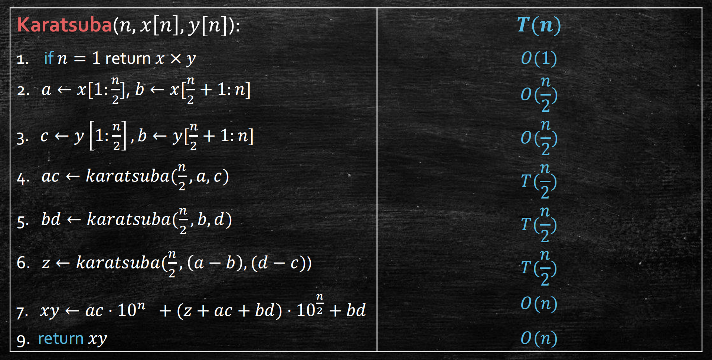
T(n)=3T(2n)+O(n)⇒T(n)=O(nlog23)
归并排序
- 正确性证明：基于数组长度 n 的数学归纳法
- 时间复杂度：
T(n)=2T(2n)+O(n)⇒T(n)=O(nlogn)
求逆序数
- 算法思路：在数逆序对的同时做归并排序
- 时间复杂度：同归并排序
快速选择算法
- 随机算法
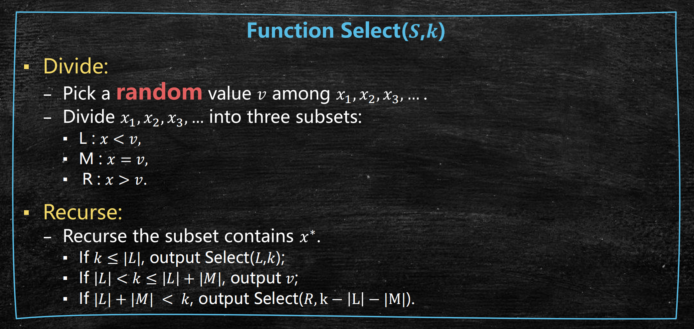
E[T(n)]=O(n)+E[T(43n)]⇒E[T(n)]=O(n)
- 中位数的中位数
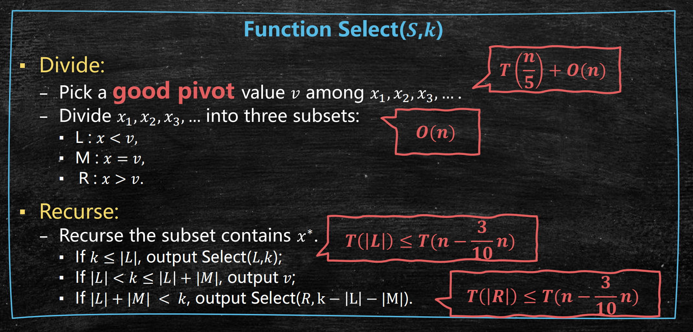
T(n)=T(0.2n)+T(0.7n)+O(n)⇒T(n)=O(n)
求最近点对
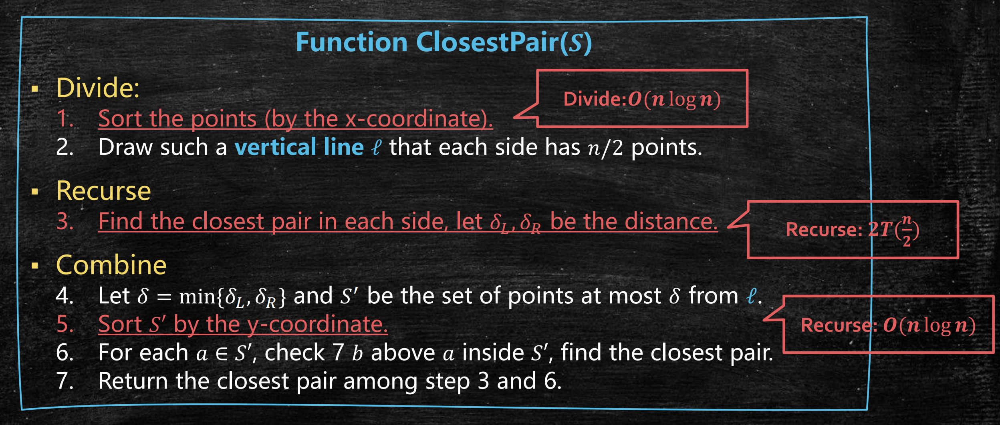
快速傅立叶变换
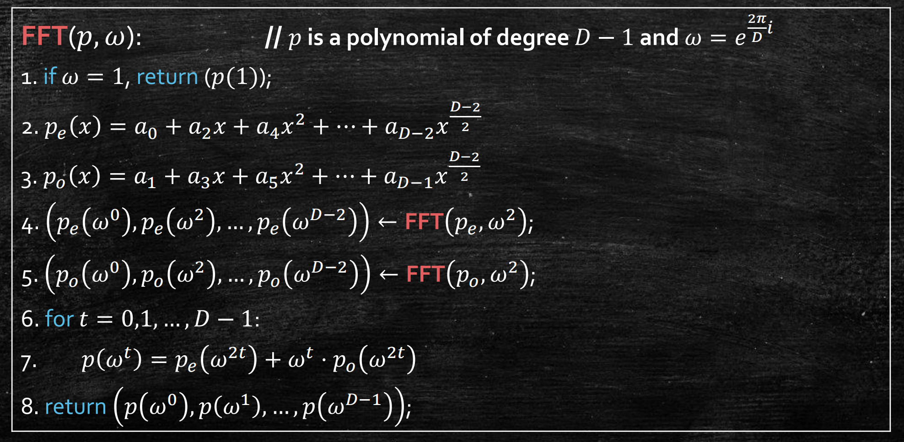
T(D)=2T(2D)+O(D)⇒T(D)=O(DlogD)
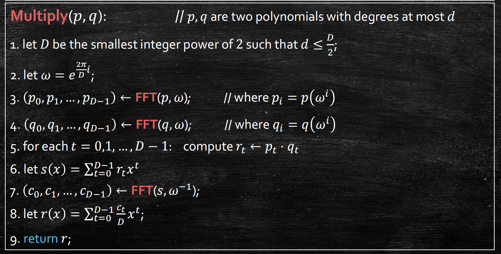
O(dlogd)+O(d)+O(dlogd)=O(dlogd)
图
DFS 及其应用
- 时间复杂度：O(∣V∣+∣E∣)
DFS 树
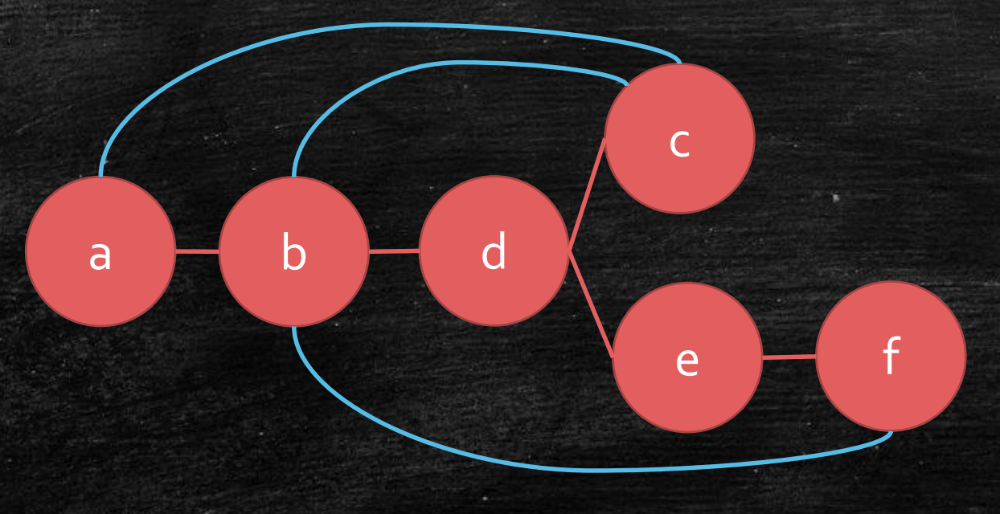
- 无向图的 DFS 树：
- 树边（Tree edges，红色）：在DFS树上的边
- 回边（Back edges，蓝色）：DFS树的后裔和非父祖先之间的边
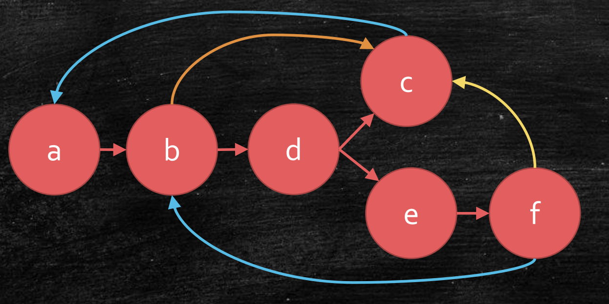
- 有向图的 DFS 树：
- 树边（Tree edges，红色）：在DFS树上的边
- 前向边（Forward edges，橙色）：指向非子后裔的边
- 回边（Back edges，蓝色）：指向祖先的边
- 横跨边（Cross edges，黄色）：指向已经完全访问过的顶点的边
无向图中的应用
- 判断可达性
- 求所有连通分量
- 检测是否有环：有环与 DFS 树存在回边等价
拓扑排序
- 核心思想：DFS 结束时间的降序序列就是拓扑序列
- 正确性证明：反证法 + DFS 树
求强连通分量
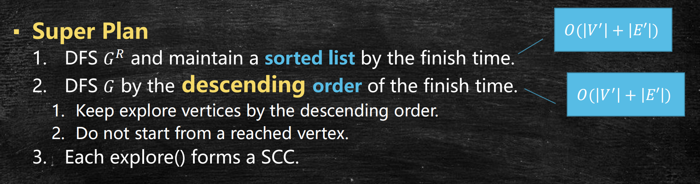
- 核心思想：DFS 最晚结束的顶点一定在头 SCC 中
- 正确性证明：反证法 + DFS 树
- 时间复杂度：O(∣V∣+∣E∣)
最短路径算法
BFS
- 适用范围：无权图
- 时间复杂度：O(∣V∣+∣E∣)
Dijkstra 算法
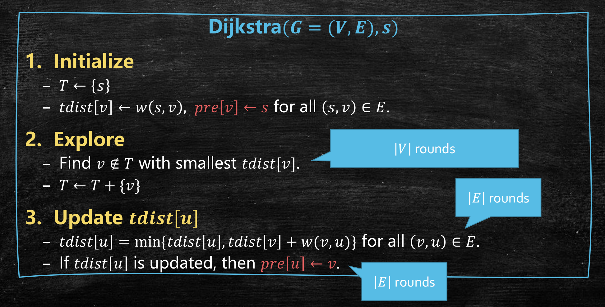
- 核心思路：贪心算法（每次选择当前距离最小的顶点）
- 正确性证明：从小 SPT 构建更大的 SPT（经典的贪心证明思路）
- 时间复杂度：
- ∣V∣ 轮 FindMin，∣E∣ 轮 Update
- 可以使用堆进行优化
- O(∣E∣+∣V∣log∣V∣)（采用斐波那契堆）
Bellman-Ford 算法
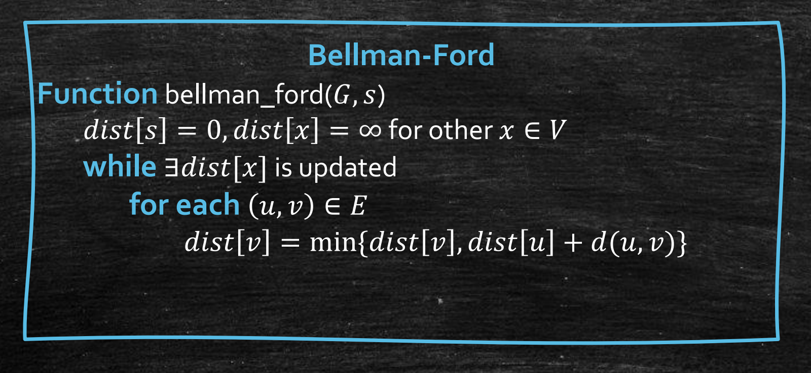
- 核心思路：第 k 轮松弛后，dist[v] 是最多含 k 条边的最短距离
- 正确性证明：基于轮数 k 的数学归纳法
- 时间复杂度：O(∣V∣⋅∣E∣)
贪心算法
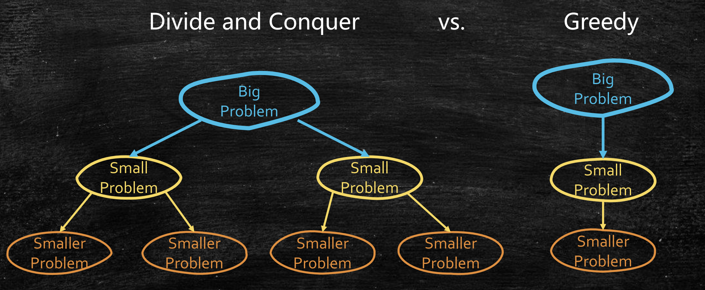
正确性证明思路
- 核心：证明始终在最优的道路上，即当前是某个最优解（OPT）的一部分
- 归纳法结构：
- 基例：∅ 属于某个最优解
- 归纳假设：前 k−1 步选择属于某个 OPT
- 归纳步骤：证明第 k 步选择后仍属于某个 OPT
- 交换论证：通过调整局部选择构造矛盾
重要算法
Prim 算法
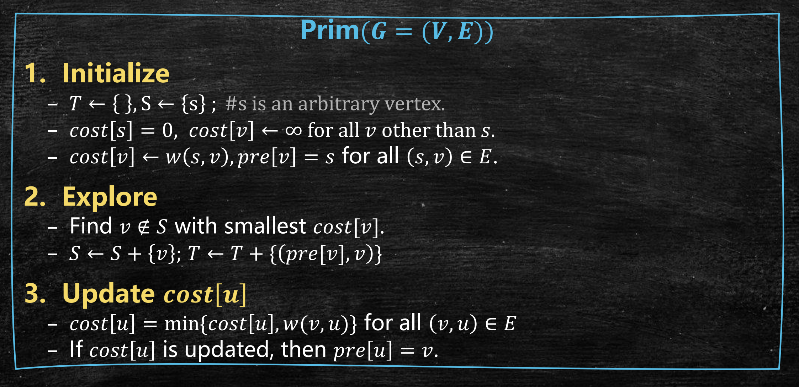
- 正确性证明：
- 核心逻辑：证明每一步构造的树是一棵完整的 MST 的一部分。
- 交换论证：若存在更优生成树，可通过替换边使其包含当前选择的边。
- 时间复杂度：O(∣E∣+∣V∣log∣V∣)（采用斐波那契堆）
Kruskal 算法
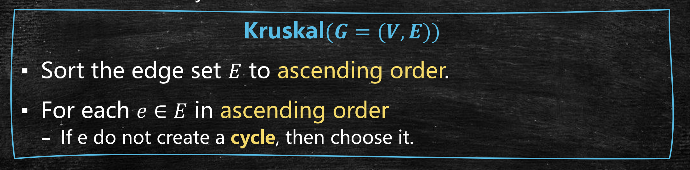
- 正确性证明：类似 Prim 算法
- 时间复杂度： 采用并查集
- 排序：O(∣E∣log∣E∣)
- 查组：2∣E∣⋅O(log∣V∣)
- 合并：∣V∣⋅O(1)
- 总时间复杂度：O(∣E∣log∣V∣)
Huffman 算法
- 正确性证明：
- 核心思路：每一次合并后仍是 OPT 的一部分
- 交换论证：如果交换为 OPT 中节点，代价不变小
- 时间复杂度：
- 初始排序：O(nlogn)
- 重复 n 轮（堆实现）：
- 找两个最小节点：O(1)
- 删除两个节点：O(logn)
- 插入一个节点：O(logn)
- 总复杂度：O(nlogn)
重要数据结构
堆
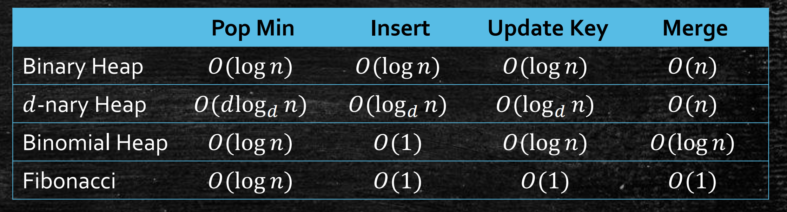
并查集
- Find：O(logn)→O(α(n)) (路径压缩)
- Union：O(1)